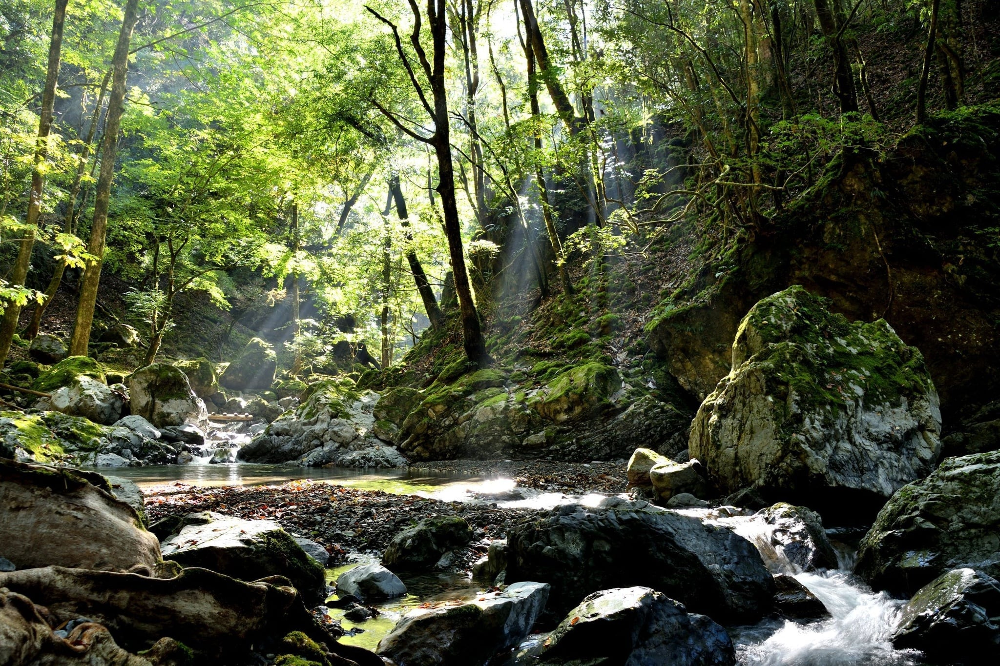

登山ツアー予約
川上村の自然に囲まれた登山ツアーで、初心者向けの美しい景色を楽しめるコースをご用意しています。

持ち物リスト
・足元をしっかり守るために、グリップ力のある登山靴を選びましょう。
・速乾性・通気性のあるシャツやパンツ、レインウェア、防寒着など、天候の変化に対応できる服装を準備してください。
・十分な量の水と、高エネルギーのスナックや食事を持参しましょう。
・日焼け対策として、日焼け止めクリームや帽子を持参しましょう。
・電波が届かないので紙の地図の持参を推奨します。
"注意喚起"
・コースを応募することで登山届が奈良県警に送信されたことになります
・下山後下山届の送信ご協力お願いいたします。下山したかわからず捜索隊が出る恐れがあります。
・山ヒルが噛まれる恐れがあるため長袖長ズボン着用推奨、ズボンの裾は靴下に入れるとより効果的です。
・ 防虫スプレーの使用、ヒル対策として、防虫スプレーを靴や衣服にしっかりと噴霧しましょう。
・もし遭難した場合は焦らず川、滝の音を聞いて川沿いに下山していきましょう。